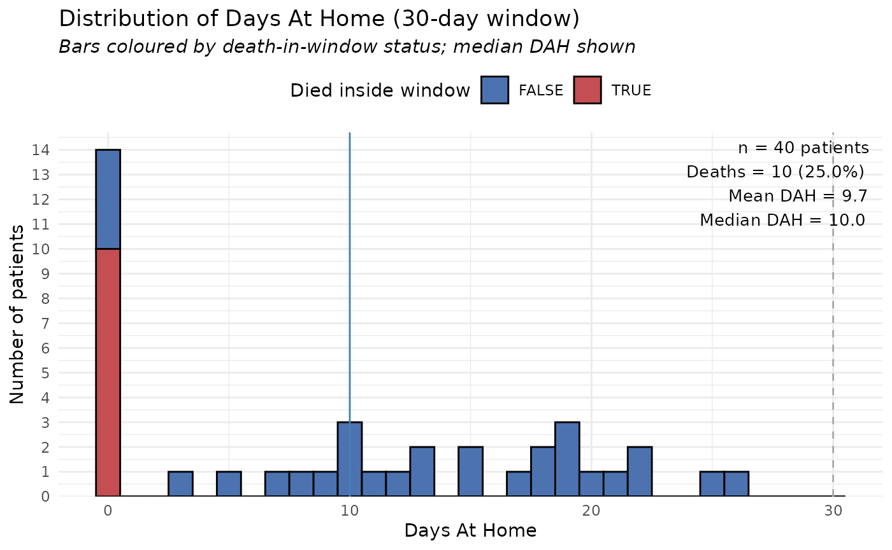

What the DAH pipeline does
The DAH (Days‑At‑Home) pipeline takes a long‑format table of clinical events and calculates, for each patient, how many days out of a user‑defined window (default 30 days) they spent at home.
Primary admission → start of the window.
Hospital or rehabilitation stays → days
not at home.
If a patient dies inside the window, their DAH is set
to 0.
All column names can be customised; you only need to tell the wrapper which columns correspond to the required concepts.
1️⃣ Get the package and load the example data set
The package ships a reproducible synthetic data set called
synthetic_data.
str(dahcalc::synthetic_data)
#> tibble [131 × 7] (S3: tbl_df/tbl/data.frame)
#> $ patient_id : int [1:131] 1 1 1 2 2 2 2 2 3 3 ...
#> $ event_id : int [1:131] 1 2 3 1 2 3 4 5 1 2 ...
#> $ event_type : chr [1:131] "primary" "rehabilitation" "rehabilitation" "primary" ...
#> $ start_date : Date[1:131], format: "2023-08-09" "2023-08-20" ...
#> $ end_date : Date[1:131], format: "2023-08-16" "2023-08-30" ...
#> $ intervention_date: Date[1:131], format: "2023-08-13" NA ...
#> $ death_date : Date[1:131], format: NA NA ...The data already have the canonical column names that the pipeline expects:
patient_idevent_id-
event_type("primary","hospital","rehabilitation"or"death") -
start_date,end_date -
intervention_date(only filled for the primary admission) -
death_date(filled only for rows of type"death")
2️⃣ (Optional) Rename columns to match your own file
If your own CSV uses different names you can rename them before calling the pipeline. For demonstration we rename them to a lower‑case scheme, but you could skip this step entirely if your file already uses the canonical names.
# Make a copy so we do not alter the original object
my_dt <- dahcalc::synthetic_data
# Suppose the user’s file uses the following names:
# pid, eid, etype, adm_start, adm_end, int_date, dod
my_dt <- setNames(
my_dt,
c("pid", "eid", "etype", "adm_start",
"adm_end", "int_date", "dod")
)
head(my_dt)
#> # A tibble: 6 × 7
#> pid eid etype adm_start adm_end int_date dod
#> <int> <int> <chr> <date> <date> <date> <date>
#> 1 1 1 primary 2023-08-09 2023-08-16 2023-08-13 NA
#> 2 1 2 rehabilitation 2023-08-20 2023-08-30 NA NA
#> 3 1 3 rehabilitation 2023-09-01 2023-09-09 NA NA
#> 4 2 1 primary 2023-05-01 2023-05-12 2023-05-05 NA
#> 5 2 2 rehabilitation 2023-05-13 2023-05-17 NA NA
#> 6 2 3 rehabilitation 2023-05-22 2023-06-01 NA NANow my_dt looks like the data a user might supply.
3️⃣ Run the DAH pipeline
Tell the wrapper the names you are using (or skip the arguments if you kept the canonical names).
res <- run_dah_pipeline(
data_long = my_dt,
window_days = 30, # 30‑day observation window
patient_id_col = "pid",
event_id_col = "eid",
event_type_col = "etype",
start_date_col = "adm_start",
end_date_col = "adm_end",
intervention_date_col = "int_date",
death_date_col = "dod",
verbose = TRUE, # prints a short validation summary
keep_original_names = TRUE # keep the user’s column names in the output
)
#>
#> === Validation summary ===
#> patient_id overlap
#> 1 1 FALSE
#> 2 2 FALSE
#> 3 3 FALSE
#> 4 4 FALSE
#> 5 5 FALSE
#> 6 6 FALSE
#> 7 7 FALSE
#> 8 8 FALSE
#> 9 9 FALSE
#> 10 10 FALSE
#> 11 11 FALSE
#> 12 12 FALSE
#> 13 13 FALSE
#> 14 14 FALSE
#> 15 15 FALSE
#> 16 16 FALSE
#> 17 18 FALSE
#> 18 19 FALSE
#> 19 20 FALSE
#> 20 21 FALSE
#> 21 22 FALSE
#> 22 23 FALSE
#> 23 24 FALSE
#> 24 25 FALSE
#> 25 26 FALSE
#> 26 27 FALSE
#> 27 28 FALSE
#> 28 29 FALSE
#> 29 30 FALSE
#> 30 31 FALSE
#> 31 32 FALSE
#> 32 33 FALSE
#> 33 34 FALSE
#> 34 36 FALSE
#> 35 37 FALSE
#> 36 39 FALSE
#> 37 40 FALSE
#> 38 NA FALSE
# The result is a list with three main components:
str(res, max.level = 1)
#> List of 5
#> $ per_patient :'data.frame': 40 obs. of 7 variables:
#> $ cohort_summary:'data.frame': 1 obs. of 10 variables:
#> $ plot : <ggplot2::ggplot>
#> ..@ data :'data.frame': 40 obs. of 7 variables:
#> ..@ layers :List of 2
#> ..@ scales :Classes 'ScalesList', 'ggproto', 'gg' <ggproto object: Class ScalesList, gg>
#> add: function
#> add_defaults: function
#> add_missing: function
#> backtransform_df: function
#> clone: function
#> find: function
#> get_scales: function
#> has_scale: function
#> input: function
#> map_df: function
#> n: function
#> non_position_scales: function
#> scales: list
#> set_palettes: function
#> train_df: function
#> transform_df: function
#> super: <ggproto object: Class ScalesList, gg>
#> ..@ guides :Classes 'Guides', 'ggproto', 'gg' <ggproto object: Class Guides, gg>
#> add: function
#> assemble: function
#> build: function
#> draw: function
#> get_custom: function
#> get_guide: function
#> get_params: function
#> get_position: function
#> guides: NULL
#> merge: function
#> missing: <ggproto object: Class GuideNone, Guide, gg>
#> add_title: function
#> arrange_layout: function
#> assemble_drawing: function
#> available_aes: any
#> build_decor: function
#> build_labels: function
#> build_ticks: function
#> build_title: function
#> draw: function
#> draw_early_exit: function
#> elements: list
#> extract_decor: function
#> extract_key: function
#> extract_params: function
#> get_layer_key: function
#> hashables: list
#> measure_grobs: function
#> merge: function
#> override_elements: function
#> params: list
#> process_layers: function
#> setup_elements: function
#> setup_params: function
#> train: function
#> transform: function
#> super: <ggproto object: Class GuideNone, Guide, gg>
#> package_box: function
#> print: function
#> process_layers: function
#> setup: function
#> subset_guides: function
#> train: function
#> update_params: function
#> super: <ggproto object: Class Guides, gg>
#> ..@ mapping : <ggplot2::mapping> List of 2
#> .. .. $ x : language ~dah
#> .. .. ..- attr(*, ".Environment")=<environment: 0x557ef1a2da30>
#> .. .. $ fill: language ~died_in_window
#> .. .. ..- attr(*, ".Environment")=<environment: 0x557ef1a2da30>
#> ..@ theme : <theme> List of 144
#> .. .. $ line : <ggplot2::element_line>
#> .. .. ..@ colour : chr "black"
#> .. .. ..@ linewidth : num 0.5
#> .. .. ..@ linetype : num 1
#> .. .. ..@ lineend : chr "butt"
#> .. .. ..@ linejoin : chr "round"
#> .. .. ..@ arrow : logi FALSE
#> .. .. ..@ arrow.fill : chr "black"
#> .. .. ..@ inherit.blank: logi TRUE
#> .. .. $ rect : <ggplot2::element_rect>
#> .. .. ..@ fill : chr "white"
#> .. .. ..@ colour : chr "black"
#> .. .. ..@ linewidth : num 0.5
#> .. .. ..@ linetype : num 1
#> .. .. ..@ linejoin : chr "round"
#> .. .. ..@ inherit.blank: logi TRUE
#> .. .. $ text : <ggplot2::element_text>
#> .. .. ..@ family : chr ""
#> .. .. ..@ face : chr "plain"
#> .. .. ..@ italic : chr NA
#> .. .. ..@ fontweight : num NA
#> .. .. ..@ fontwidth : num NA
#> .. .. ..@ colour : chr "black"
#> .. .. ..@ size : num 11
#> .. .. ..@ hjust : num 0.5
#> .. .. ..@ vjust : num 0.5
#> .. .. ..@ angle : num 0
#> .. .. ..@ lineheight : num 0.9
#> .. .. ..@ margin : <ggplot2::margin> num [1:4] 0 0 0 0
#> .. .. ..@ debug : logi FALSE
#> .. .. ..@ inherit.blank: logi TRUE
#> .. .. $ title : <ggplot2::element_text>
#> .. .. ..@ family : NULL
#> .. .. ..@ face : NULL
#> .. .. ..@ italic : chr NA
#> .. .. ..@ fontweight : num NA
#> .. .. ..@ fontwidth : num NA
#> .. .. ..@ colour : NULL
#> .. .. ..@ size : NULL
#> .. .. ..@ hjust : NULL
#> .. .. ..@ vjust : NULL
#> .. .. ..@ angle : NULL
#> .. .. ..@ lineheight : NULL
#> .. .. ..@ margin : NULL
#> .. .. ..@ debug : NULL
#> .. .. ..@ inherit.blank: logi TRUE
#> .. .. $ point : <ggplot2::element_point>
#> .. .. ..@ colour : chr "black"
#> .. .. ..@ shape : num 19
#> .. .. ..@ size : num 1.5
#> .. .. ..@ fill : chr "white"
#> .. .. ..@ stroke : num 0.5
#> .. .. ..@ inherit.blank: logi TRUE
#> .. .. $ polygon : <ggplot2::element_polygon>
#> .. .. ..@ fill : chr "white"
#> .. .. ..@ colour : chr "black"
#> .. .. ..@ linewidth : num 0.5
#> .. .. ..@ linetype : num 1
#> .. .. ..@ linejoin : chr "round"
#> .. .. ..@ inherit.blank: logi TRUE
#> .. .. $ geom : <ggplot2::element_geom>
#> .. .. ..@ ink : chr "black"
#> .. .. ..@ paper : chr "white"
#> .. .. ..@ accent : chr "#3366FF"
#> .. .. ..@ linewidth : num 0.5
#> .. .. ..@ borderwidth: num 0.5
#> .. .. ..@ linetype : int 1
#> .. .. ..@ bordertype : int 1
#> .. .. ..@ family : chr ""
#> .. .. ..@ fontsize : num 3.87
#> .. .. ..@ pointsize : num 1.5
#> .. .. ..@ pointshape : num 19
#> .. .. ..@ colour : NULL
#> .. .. ..@ fill : NULL
#> .. .. $ spacing : 'simpleUnit' num 5.5points
#> .. .. ..- attr(*, "unit")= int 8
#> .. .. $ margins : <ggplot2::margin> num [1:4] 5.5 5.5 5.5 5.5
#> .. .. $ aspect.ratio : NULL
#> .. .. $ axis.title : NULL
#> .. .. $ axis.title.x : <ggplot2::element_text>
#> .. .. ..@ family : NULL
#> .. .. ..@ face : NULL
#> .. .. ..@ italic : chr NA
#> .. .. ..@ fontweight : num NA
#> .. .. ..@ fontwidth : num NA
#> .. .. ..@ colour : NULL
#> .. .. ..@ size : NULL
#> .. .. ..@ hjust : NULL
#> .. .. ..@ vjust : num 1
#> .. .. ..@ angle : NULL
#> .. .. ..@ lineheight : NULL
#> .. .. ..@ margin : <ggplot2::margin> num [1:4] 2.75 0 0 0
#> .. .. ..@ debug : NULL
#> .. .. ..@ inherit.blank: logi TRUE
#> .. .. $ axis.title.x.top : <ggplot2::element_text>
#> .. .. ..@ family : NULL
#> .. .. ..@ face : NULL
#> .. .. ..@ italic : chr NA
#> .. .. ..@ fontweight : num NA
#> .. .. ..@ fontwidth : num NA
#> .. .. ..@ colour : NULL
#> .. .. ..@ size : NULL
#> .. .. ..@ hjust : NULL
#> .. .. ..@ vjust : num 0
#> .. .. ..@ angle : NULL
#> .. .. ..@ lineheight : NULL
#> .. .. ..@ margin : <ggplot2::margin> num [1:4] 0 0 2.75 0
#> .. .. ..@ debug : NULL
#> .. .. ..@ inherit.blank: logi TRUE
#> .. .. $ axis.title.x.bottom : NULL
#> .. .. $ axis.title.y : <ggplot2::element_text>
#> .. .. ..@ family : NULL
#> .. .. ..@ face : NULL
#> .. .. ..@ italic : chr NA
#> .. .. ..@ fontweight : num NA
#> .. .. ..@ fontwidth : num NA
#> .. .. ..@ colour : NULL
#> .. .. ..@ size : NULL
#> .. .. ..@ hjust : NULL
#> .. .. ..@ vjust : num 1
#> .. .. ..@ angle : num 90
#> .. .. ..@ lineheight : NULL
#> .. .. ..@ margin : <ggplot2::margin> num [1:4] 0 2.75 0 0
#> .. .. ..@ debug : NULL
#> .. .. ..@ inherit.blank: logi TRUE
#> .. .. $ axis.title.y.left : NULL
#> .. .. $ axis.title.y.right : <ggplot2::element_text>
#> .. .. ..@ family : NULL
#> .. .. ..@ face : NULL
#> .. .. ..@ italic : chr NA
#> .. .. ..@ fontweight : num NA
#> .. .. ..@ fontwidth : num NA
#> .. .. ..@ colour : NULL
#> .. .. ..@ size : NULL
#> .. .. ..@ hjust : NULL
#> .. .. ..@ vjust : num 1
#> .. .. ..@ angle : num -90
#> .. .. ..@ lineheight : NULL
#> .. .. ..@ margin : <ggplot2::margin> num [1:4] 0 0 0 2.75
#> .. .. ..@ debug : NULL
#> .. .. ..@ inherit.blank: logi TRUE
#> .. .. $ axis.text : <ggplot2::element_text>
#> .. .. ..@ family : NULL
#> .. .. ..@ face : NULL
#> .. .. ..@ italic : chr NA
#> .. .. ..@ fontweight : num NA
#> .. .. ..@ fontwidth : num NA
#> .. .. ..@ colour : chr "#4D4D4DFF"
#> .. .. ..@ size : 'rel' num 0.8
#> .. .. ..@ hjust : NULL
#> .. .. ..@ vjust : NULL
#> .. .. ..@ angle : NULL
#> .. .. ..@ lineheight : NULL
#> .. .. ..@ margin : NULL
#> .. .. ..@ debug : NULL
#> .. .. ..@ inherit.blank: logi TRUE
#> .. .. $ axis.text.x : <ggplot2::element_text>
#> .. .. ..@ family : NULL
#> .. .. ..@ face : NULL
#> .. .. ..@ italic : chr NA
#> .. .. ..@ fontweight : num NA
#> .. .. ..@ fontwidth : num NA
#> .. .. ..@ colour : NULL
#> .. .. ..@ size : NULL
#> .. .. ..@ hjust : NULL
#> .. .. ..@ vjust : num 1
#> .. .. ..@ angle : NULL
#> .. .. ..@ lineheight : NULL
#> .. .. ..@ margin : <ggplot2::margin> num [1:4] 2.2 0 0 0
#> .. .. ..@ debug : NULL
#> .. .. ..@ inherit.blank: logi TRUE
#> .. .. $ axis.text.x.top : <ggplot2::element_text>
#> .. .. ..@ family : NULL
#> .. .. ..@ face : NULL
#> .. .. ..@ italic : chr NA
#> .. .. ..@ fontweight : num NA
#> .. .. ..@ fontwidth : num NA
#> .. .. ..@ colour : NULL
#> .. .. ..@ size : NULL
#> .. .. ..@ hjust : NULL
#> .. .. ..@ vjust : NULL
#> .. .. ..@ angle : NULL
#> .. .. ..@ lineheight : NULL
#> .. .. ..@ margin : <ggplot2::margin> num [1:4] 0 0 4.95 0
#> .. .. ..@ debug : NULL
#> .. .. ..@ inherit.blank: logi TRUE
#> .. .. $ axis.text.x.bottom : <ggplot2::element_text>
#> .. .. ..@ family : NULL
#> .. .. ..@ face : NULL
#> .. .. ..@ italic : chr NA
#> .. .. ..@ fontweight : num NA
#> .. .. ..@ fontwidth : num NA
#> .. .. ..@ colour : NULL
#> .. .. ..@ size : NULL
#> .. .. ..@ hjust : NULL
#> .. .. ..@ vjust : NULL
#> .. .. ..@ angle : NULL
#> .. .. ..@ lineheight : NULL
#> .. .. ..@ margin : <ggplot2::margin> num [1:4] 4.95 0 0 0
#> .. .. ..@ debug : NULL
#> .. .. ..@ inherit.blank: logi TRUE
#> .. .. $ axis.text.y : <ggplot2::element_text>
#> .. .. ..@ family : NULL
#> .. .. ..@ face : NULL
#> .. .. ..@ italic : chr NA
#> .. .. ..@ fontweight : num NA
#> .. .. ..@ fontwidth : num NA
#> .. .. ..@ colour : NULL
#> .. .. ..@ size : NULL
#> .. .. ..@ hjust : num 1
#> .. .. ..@ vjust : NULL
#> .. .. ..@ angle : NULL
#> .. .. ..@ lineheight : NULL
#> .. .. ..@ margin : <ggplot2::margin> num [1:4] 0 2.2 0 0
#> .. .. ..@ debug : NULL
#> .. .. ..@ inherit.blank: logi TRUE
#> .. .. $ axis.text.y.left : <ggplot2::element_text>
#> .. .. ..@ family : NULL
#> .. .. ..@ face : NULL
#> .. .. ..@ italic : chr NA
#> .. .. ..@ fontweight : num NA
#> .. .. ..@ fontwidth : num NA
#> .. .. ..@ colour : NULL
#> .. .. ..@ size : NULL
#> .. .. ..@ hjust : NULL
#> .. .. ..@ vjust : NULL
#> .. .. ..@ angle : NULL
#> .. .. ..@ lineheight : NULL
#> .. .. ..@ margin : <ggplot2::margin> num [1:4] 0 4.95 0 0
#> .. .. ..@ debug : NULL
#> .. .. ..@ inherit.blank: logi TRUE
#> .. .. $ axis.text.y.right : <ggplot2::element_text>
#> .. .. ..@ family : NULL
#> .. .. ..@ face : NULL
#> .. .. ..@ italic : chr NA
#> .. .. ..@ fontweight : num NA
#> .. .. ..@ fontwidth : num NA
#> .. .. ..@ colour : NULL
#> .. .. ..@ size : NULL
#> .. .. ..@ hjust : NULL
#> .. .. ..@ vjust : NULL
#> .. .. ..@ angle : NULL
#> .. .. ..@ lineheight : NULL
#> .. .. ..@ margin : <ggplot2::margin> num [1:4] 0 0 0 4.95
#> .. .. ..@ debug : NULL
#> .. .. ..@ inherit.blank: logi TRUE
#> .. .. $ axis.text.theta : NULL
#> .. .. $ axis.text.r : <ggplot2::element_text>
#> .. .. ..@ family : NULL
#> .. .. ..@ face : NULL
#> .. .. ..@ italic : chr NA
#> .. .. ..@ fontweight : num NA
#> .. .. ..@ fontwidth : num NA
#> .. .. ..@ colour : NULL
#> .. .. ..@ size : NULL
#> .. .. ..@ hjust : num 0.5
#> .. .. ..@ vjust : NULL
#> .. .. ..@ angle : NULL
#> .. .. ..@ lineheight : NULL
#> .. .. ..@ margin : <ggplot2::margin> num [1:4] 0 2.2 0 2.2
#> .. .. ..@ debug : NULL
#> .. .. ..@ inherit.blank: logi TRUE
#> .. .. $ axis.ticks : <ggplot2::element_blank>
#> .. .. $ axis.ticks.x : NULL
#> .. .. $ axis.ticks.x.top : NULL
#> .. .. $ axis.ticks.x.bottom : NULL
#> .. .. $ axis.ticks.y : NULL
#> .. .. $ axis.ticks.y.left : NULL
#> .. .. $ axis.ticks.y.right : NULL
#> .. .. $ axis.ticks.theta : NULL
#> .. .. $ axis.ticks.r : NULL
#> .. .. $ axis.minor.ticks.x.top : NULL
#> .. .. $ axis.minor.ticks.x.bottom : NULL
#> .. .. $ axis.minor.ticks.y.left : NULL
#> .. .. $ axis.minor.ticks.y.right : NULL
#> .. .. $ axis.minor.ticks.theta : NULL
#> .. .. $ axis.minor.ticks.r : NULL
#> .. .. $ axis.ticks.length : 'rel' num 0.5
#> .. .. $ axis.ticks.length.x : NULL
#> .. .. $ axis.ticks.length.x.top : NULL
#> .. .. $ axis.ticks.length.x.bottom : NULL
#> .. .. $ axis.ticks.length.y : NULL
#> .. .. $ axis.ticks.length.y.left : NULL
#> .. .. $ axis.ticks.length.y.right : NULL
#> .. .. $ axis.ticks.length.theta : NULL
#> .. .. $ axis.ticks.length.r : NULL
#> .. .. $ axis.minor.ticks.length : 'rel' num 0.75
#> .. .. $ axis.minor.ticks.length.x : NULL
#> .. .. $ axis.minor.ticks.length.x.top : NULL
#> .. .. $ axis.minor.ticks.length.x.bottom: NULL
#> .. .. $ axis.minor.ticks.length.y : NULL
#> .. .. $ axis.minor.ticks.length.y.left : NULL
#> .. .. $ axis.minor.ticks.length.y.right : NULL
#> .. .. $ axis.minor.ticks.length.theta : NULL
#> .. .. $ axis.minor.ticks.length.r : NULL
#> .. .. $ axis.line : <ggplot2::element_blank>
#> .. .. $ axis.line.x : NULL
#> .. .. $ axis.line.x.top : NULL
#> .. .. $ axis.line.x.bottom : NULL
#> .. .. $ axis.line.y : NULL
#> .. .. $ axis.line.y.left : NULL
#> .. .. $ axis.line.y.right : NULL
#> .. .. $ axis.line.theta : NULL
#> .. .. $ axis.line.r : NULL
#> .. .. $ legend.background : <ggplot2::element_blank>
#> .. .. $ legend.margin : NULL
#> .. .. $ legend.spacing : 'rel' num 2
#> .. .. $ legend.spacing.x : NULL
#> .. .. $ legend.spacing.y : NULL
#> .. .. $ legend.key : <ggplot2::element_blank>
#> .. .. $ legend.key.size : 'simpleUnit' num 1.2lines
#> .. .. ..- attr(*, "unit")= int 3
#> .. .. $ legend.key.height : NULL
#> .. .. $ legend.key.width : NULL
#> .. .. $ legend.key.spacing : NULL
#> .. .. $ legend.key.spacing.x : NULL
#> .. .. $ legend.key.spacing.y : NULL
#> .. .. $ legend.key.justification : NULL
#> .. .. $ legend.frame : NULL
#> .. .. $ legend.ticks : NULL
#> .. .. $ legend.ticks.length : 'rel' num 0.2
#> .. .. $ legend.axis.line : NULL
#> .. .. $ legend.text : <ggplot2::element_text>
#> .. .. ..@ family : NULL
#> .. .. ..@ face : NULL
#> .. .. ..@ italic : chr NA
#> .. .. ..@ fontweight : num NA
#> .. .. ..@ fontwidth : num NA
#> .. .. ..@ colour : NULL
#> .. .. ..@ size : 'rel' num 0.8
#> .. .. ..@ hjust : NULL
#> .. .. ..@ vjust : NULL
#> .. .. ..@ angle : NULL
#> .. .. ..@ lineheight : NULL
#> .. .. ..@ margin : NULL
#> .. .. ..@ debug : NULL
#> .. .. ..@ inherit.blank: logi TRUE
#> .. .. $ legend.text.position : NULL
#> .. .. $ legend.title : <ggplot2::element_text>
#> .. .. ..@ family : NULL
#> .. .. ..@ face : NULL
#> .. .. ..@ italic : chr NA
#> .. .. ..@ fontweight : num NA
#> .. .. ..@ fontwidth : num NA
#> .. .. ..@ colour : NULL
#> .. .. ..@ size : NULL
#> .. .. ..@ hjust : num 0
#> .. .. ..@ vjust : NULL
#> .. .. ..@ angle : NULL
#> .. .. ..@ lineheight : NULL
#> .. .. ..@ margin : NULL
#> .. .. ..@ debug : NULL
#> .. .. ..@ inherit.blank: logi TRUE
#> .. .. $ legend.title.position : NULL
#> .. .. $ legend.position : chr "right"
#> .. .. $ legend.position.inside : NULL
#> .. .. $ legend.direction : NULL
#> .. .. $ legend.byrow : NULL
#> .. .. $ legend.justification : chr "center"
#> .. .. $ legend.justification.top : NULL
#> .. .. $ legend.justification.bottom : NULL
#> .. .. $ legend.justification.left : NULL
#> .. .. $ legend.justification.right : NULL
#> .. .. $ legend.justification.inside : NULL
#> .. .. [list output truncated]
#> .. .. @ complete: logi TRUE
#> .. .. @ validate: logi TRUE
#> ..@ coordinates:Classes 'CoordCartesian', 'Coord', 'ggproto', 'gg' <ggproto object: Class CoordCartesian, Coord, gg>
#> aspect: function
#> backtransform_range: function
#> clip: on
#> default: TRUE
#> distance: function
#> draw_panel: function
#> expand: TRUE
#> is_free: function
#> is_linear: function
#> labels: function
#> limits: list
#> modify_scales: function
#> range: function
#> ratio: NULL
#> render_axis_h: function
#> render_axis_v: function
#> render_bg: function
#> render_fg: function
#> reverse: none
#> setup_data: function
#> setup_layout: function
#> setup_panel_guides: function
#> setup_panel_params: function
#> setup_params: function
#> train_panel_guides: function
#> transform: function
#> super: <ggproto object: Class CoordCartesian, Coord, gg>
#> ..@ facet :Classes 'FacetNull', 'Facet', 'ggproto', 'gg' <ggproto object: Class FacetNull, Facet, gg>
#> attach_axes: function
#> attach_strips: function
#> compute_layout: function
#> draw_back: function
#> draw_front: function
#> draw_labels: function
#> draw_panel_content: function
#> draw_panels: function
#> finish_data: function
#> format_strip_labels: function
#> init_gtable: function
#> init_scales: function
#> map_data: function
#> params: list
#> set_panel_size: function
#> setup_data: function
#> setup_panel_params: function
#> setup_params: function
#> shrink: TRUE
#> train_scales: function
#> vars: function
#> super: <ggproto object: Class FacetNull, Facet, gg>
#> ..@ layout :Classes 'Layout', 'ggproto', 'gg' <ggproto object: Class Layout, gg>
#> coord: NULL
#> coord_params: list
#> facet: NULL
#> facet_params: list
#> finish_data: function
#> get_scales: function
#> layout: NULL
#> map_position: function
#> panel_params: NULL
#> panel_scales_x: NULL
#> panel_scales_y: NULL
#> render: function
#> render_labels: function
#> reset_scales: function
#> resolve_label: function
#> setup: function
#> setup_panel_guides: function
#> setup_panel_params: function
#> train_position: function
#> super: <ggproto object: Class Layout, gg>
#> ..@ labels : <ggplot2::labels> List of 3
#> .. .. $ x : chr "Days At Home"
#> .. .. $ y : chr "Number of patients"
#> .. .. $ title: chr "Distribution of Days At Home (30-day window)"
#> ..@ meta : list()
#> ..@ plot_env :<environment: 0x557ef1a2da30>
#> $ overlap_flag :'data.frame': 38 obs. of 2 variables:
#> $ column_mapping: Named chr [1:7] "pid" "eid" "etype" "adm_start" ...
#> ..- attr(*, "names")= chr [1:7] "patient_id" "event_id" "event_type" "start_date" ...-
res$per_patient– one row per patient with DAH values.
-
res$cohort_summary– aggregated statistics for the whole cohort.
-
res$plot– a ggplot object showing the DAH distribution.
4️⃣ Look at the cohort‑level summary
print(res$cohort_summary)
#> window_days n_patients mean_dah median_dah sd_dah q25_dah q75_dah
#> 25% 30 40 18.35 17.5 6.62 12.75 23.25
#> pct_full_home mean_effective_window_days dah_per_100_pt_days
#> 25% 7.5 30 61.17Typical output shows:
- number of patients,
- mean / median / SD of DAH,
- percentage with full 30 days at home,
- DAH per 100 person‑days, etc.
5️⃣ Inspect the per‑patient table
head(res$per_patient, 10)
#> pid int_date dod died_in_window institutional_days dah effective_window
#> 1 1 2023-08-13 <NA> FALSE 20 10 30
#> 2 2 2023-05-05 <NA> FALSE 16 14 30
#> 3 3 2023-10-21 <NA> FALSE 9 21 30
#> 4 4 2023-02-18 <NA> FALSE 10 20 30
#> 5 5 2023-04-21 <NA> FALSE 5 25 30
#> 6 6 2023-12-22 <NA> FALSE 22 8 30
#> 7 7 2023-04-21 <NA> FALSE 14 16 30
#> 8 8 2023-06-13 <NA> FALSE 19 11 30
#> 9 9 2023-06-29 <NA> FALSE 14 16 30
#> 10 10 2023-10-16 <NA> FALSE 13 17 30Key columns you’ll see:
| column | meaning |
|---|---|
pid (or patient_id) |
patient identifier |
dah |
days at home within the window (0 if death occurs inside) |
effective_window |
length of the observation window actually used (shorter when death occurs) |
institutional_days |
number of days spent in hospital/rehab |
died_in_window |
TRUE if death happened inside the window |
6️⃣ Visualise the DAH distribution
print(res$plot) # displays a histogram with a vertical line at 30 days
The histogram lets you quickly see how many patients spent all 30 days at home, how many had long institutional stays, and where deaths fall.
7️⃣ What to do with your own data
When you have a real CSV file, the workflow is the same:
my_real_data <- read.csv("my_clinical_file.csv")
# (optional) rename columns if they differ from the canonical ones
# setnames(my_real_data, old = "...", new = "...")
result <- run_dah_pipeline(
dt_long = my_real_data,
patient_id_col = "my_id",
event_id_col = "my_event_id",
event_type_col = "my_type",
start_date_col = "my_start",
end_date_col = "my_end",
intervention_date_col = "my_intervention",
death_date_col = "my_death",
window_days = 30,
keep_original_names = TRUE
)
# Then explore result$cohort_summary, result$per_patient, result$plot …That’s all you need to obtain Days‑At‑Home metrics for any data set that follows the required event structure.